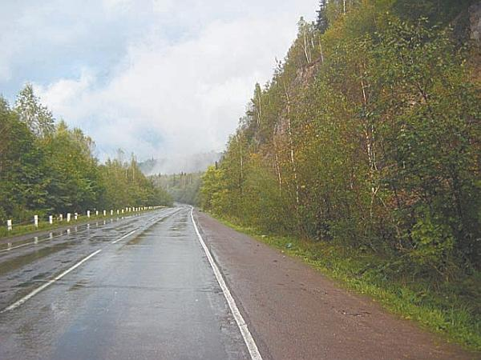
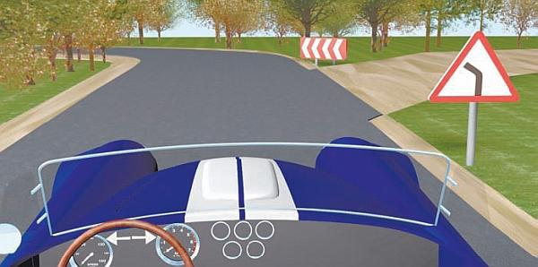
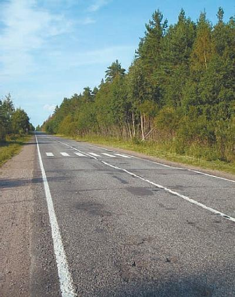

Чем опасна загородная трасса.
Одной из главных опасностей при езде по загородной трассе (рис. 4.1) является то, что при длительном движении на высокой скорости у вас может наступить состояние так называемой монотонии, в лучшем случае приводящее к заметному снижению внимательности, в худшем – к чрезвычайно опасному явлению, называемому сном с открытыми глазами, при котором со стороны кажется, что человек управляет автомобилем, но в реальности он практически не реагирует на происходящее, даже несмотря на то, что глаза у него открыты.

Рис. 4.1. Движение по пустой трассе вызывает сонливость
Такое состояние почти равноценно обычному засыпанию за рулем, его характерной особенностью является то, что оно наступает неожиданно и практически не контролируется.
Поэтому, как только вы начинаете ощущать, что постепенно «отключаетесь», немедленно остановитесь и отдохните (отлично помогает кратковременный (минут 20–30) сон). Один из верных признаков того, что от монотонного движения вы слишком сильно переутомились и вот-вот можете заснуть, – появление галлюцинаций.
Сама по себе длительная езда по трассе расслабляет водителя и заметно притупляет его бдительность. Это неудивительно, ведь в целом ситуация на дороге довольно стабильна, именно поэтому человеку трудно быстро сконцентрироваться и принять верное решение при возникновении опасности.
Часто имеет место такое явление, как утрата контроля над скоростью автомобиля. Как правило, это происходит примерно после 30–40 минут спокойной езды (без резких ускорений, торможений и маневрирования). Водитель полагает, что полностью контролирует скорость и его автомобиль движется не быстрее чем 90 километров в час (на спидометр лишний раз глянуть лень, поэтому человек доверяет интуиции), в реальности же машина разогналась до 110–120 километров в час.
При движении за городом водителю по причине высокой скорости труднее вовремя замечать дорожные знаки. Если вы не заметили знак сервиса, это еще полбеды; гораздо опаснее не заметить запрещающий (предупреждающий) знак или знак приоритета.
Например, если в данном месте запрещено ехать со скоростью более 70 километров в час по причине скользкой дороги, а вы не заметили соответствующего знака и продолжаете двигаться со скоростью 90 километров в час, последствия могут быть катастрофическими. Если вы не заметили предупреждающий знак, информирующий водителей о наличии впереди крутого поворота (рис. 4.2), машину может вынести в кювет, поскольку вы не предпримете соответствующих мер предосторожности. Если вы не увидите вовремя знак приоритета «Конец главной дороги», то будете думать, что по-прежнему находитесь на главной дороге и имеете преимущество. Эта ошибка может привести к серьезному дорожно-транспортному происшествию.

Рис. 4.2. Опасный участок на трассе: примыкание дороги перед крутым поворотом
Поскольку на загородной трассе автомобили движутся с более высокой скоростью, чем в городе, то заметно удлинняется и тормозной путь автомобиля, следовательно, снижать скорость при наличии на загородной дороге препятствия следует намного раньше. Многие дорожно-транспортные происшествия за городом возникают по причине того, что водитель не успел затормозить перед перекрестком или слишком поздно начал это делать перед пешеходным переходом (рис. 4.3) и т. д. Неопытных водителей часто выносит в кювет на крутых поворотах, поскольку они не считают нужным вовремя снизить скорость.

Рис. 4.3. Пешеходный переход на трассе всегда появляется неожиданно
Чрезвычайно опасна ситуация, когда при движении на высокой скорости по трассе у автомобиля лопается колесо. В первую очередь это касается передних колес, поскольку именно они определяют направление движения автомобиля. Часто в подобных случаях автомобили несколько раз опрокидываются, их выносит либо в кювет, либо на полосу встречного движения.
Еще хуже, если во время движения колесо оторвалось. При лопнувшем колесе водитель еще может повлиять на траекторию движения автомобиля, и, если машина сразу не опрокинулась, у него есть шанс выйти из сложившейся ситуации. С оторванным колесом машина становится полностью неконтролируемой и управлять ею практически невозможно. Поэтому, перед тем как отправиться в дорогу, тщательно проверьте, хорошо ли затянуты болты на колесах, а также исправны ли ШРУСы (с пыльниками) и ступичные подшипники.
С задними колесами подобные ситуации не столь опасны, поскольку у водителя остается возможность контролировать траекторию движения автомобиля с помощью передних колес. Однако известно немало случаев, когда лопнувшее на высокой скорости именно заднее колесо приводило к серьезному дорожно-транспортному происшествию.
Характерной особенностью движения по загородной трассе является частое выполнение водителями рискованных маневров на высокой скорости. Среди таких маневров в первую очередь следует отметить, безусловно, обгон с выездом на полосу встречного движения. Даже если в данном месте Правила дорожного движения не запрещают выполнение указанного маневра, нужно внимательно оценить дорожную ситуацию. Неграмотно выполненный обгон часто становится причиной лобовых столкновений, а такие аварии редко обходятся без трагических последствий.
Двигаясь на высокой скорости по хорошей дороге, не стоит забывать, что даже небольшой камень либо иной аналогичный предмет, попавший под колесо автомобиля, может стать причиной существенного изменения направления его движения. Поэтому, если вы едете со скоростью более 80 километров в час, старайтесь объезжать камни, ямы, выбоины, кочки и иные препятствия, находящиеся на дороге. Подобная «мелочь», попавшая под переднее колесо, способна вынести ваш автомобиль в кювет либо на полосу встречного движения.
Особо внимательным водителю следует быть в местах, где по сторонам дороги имеется крутой высокий склон. Такие участки рекомендуется проезжать на невысокой скорости и без необходимости не покидать пределы проезжей части (в частности, не заезжайте на обочину). Известны случаи, когда одно неловкое движение приводило к тому, что автомобиль, лишь немного выехав за пределы проезжей части, летел, кувыркаясь, с большой высоты. Случается, что почва под автомобилем, оставленным на обочине, проседает и машина сползает под откос. Особенно опасны такие участки при движении в ночное время, если на дороге нет заградительных сооружений или придорожных столбиков со световозвращающими элементами.
Характерной особенностью загородных трасс является то, что на многих из них возможно внезапное появление диких животных. Как правило, такие участки дорог отмечаются предупреждающим знаком 1.27 «Дикие животные». Но везде знаки расставить невозможно, поэтому водитель постоянно должен помнить о вероятности внезапного появления в непосредственной близости от автомобиля диких животных, особенно если дорога проходит возле леса или через него.
На первый взгляд может показаться, что в столкновении с диким животным особой опасности нет (кроме того, что пострадает животное). Однако подобное дорожно-транспортное происшествие может иметь самые печальные последствия. Так, угодившего под колесо мелкого зверя (например, зайца) может хватить, чтобы автомобиль не только резко изменил направление движения, но и опрокинулся либо выехал на полосу встречного движения или в кювет. Столкновение с крупным животным (лось, косуля) можно сравнить со столкновением к другим транспортным средством, так как и автомобиль получит немалые повреждения, и пассажиры могут быть серьезно травмированы (известны случаи, когда подобные дорожно-транспортные происшествия приводили даже к гибели людей).
ВНИМАНИЕ
Чаще всего аварии с участием диких животных происходят в ночное время. Это неудивительно, ведь у животного нет световозвращателей, поэтому водитель автомобиля, движущегося на большой скорости, замечает его слишком поздно и не успевает среагировать. А объехать крупное животное труднее, чем, например, пешехода.
Не многие знают, что на загородных трассах серьезную опасность могут представлять даже такие безобидные, казалось бы, создания, как обыкновенные лягушки. Правда, это происходит не везде, а только в местах их сезонной миграции, и не круглый год, а в конце весны – начале лета. Если на пути следования лягушек оказывается трасса, они пытаются перейти ее. С учетом того что в миграции участвует огромное количество этих земноводных, неудивительно, что трасса в месте перехода полностью покрыта ими. Под колесами проезжающих автомобилей лягушки гибнут тысячами. При этом проезжая часть становится скользкой, ухудшается сцепление колес с дорожным покрытием (это можно сравнить с мокрой дорогой при сильном ливне).
При движении по загородной дороге в солнечную погоду особое значение имеет состояние лобового стекла. Если приходится ехать навстречу солнцу, то на лобовом стекле проявляется множество ранее незаметных трещин, царапин, сколов, сильно ухудшающих видимость. Противосолнечные козырьки, которые имеются в любом автомобиле, в данной ситуации ничем не помогут, поэтому придется ехать на небольшой скорости и все время напрягать зрение.
Многие водители недооценивают опасность такого явления, как сильный боковой ветер, который, в частности, мешает удерживать транспортное средство в нужном направлении, особенно на загородных трассах. Бороться с данным явлением следует, уменьшая скорость движения, а также работая рулевым колесом (отметим, что с последним у новичков часто возникают проблемы).
Особо опасным и сильным боковой ветер является в случае, когда автомобиль выезжает с закрытого участка дороги, например из-за леса, высокого забора, шумового заграждения, большого здания и т. п. При сильном боковом ветре старайтесь держаться подальше от крупногабаритных транспортных средств (автобусов, фур), так как известно немало случаев, когда под воздействием ветра они переворачивались, причем иногда на следующие поблизости автомобили.
При движении по трассе вдоль горы или длинного склона имейте в виду, что в данном месте возможны обвалы, оползни, падение камней, сход селевых потоков. Обычно такие участки дорог обозначаются предупреждающим знаком 1.28 «Падение камней», но опять же – везде знаки не поставишь, поэтому нужно сохранять бдительность или по возможности объезжать места, где может возникать подобная опасность.